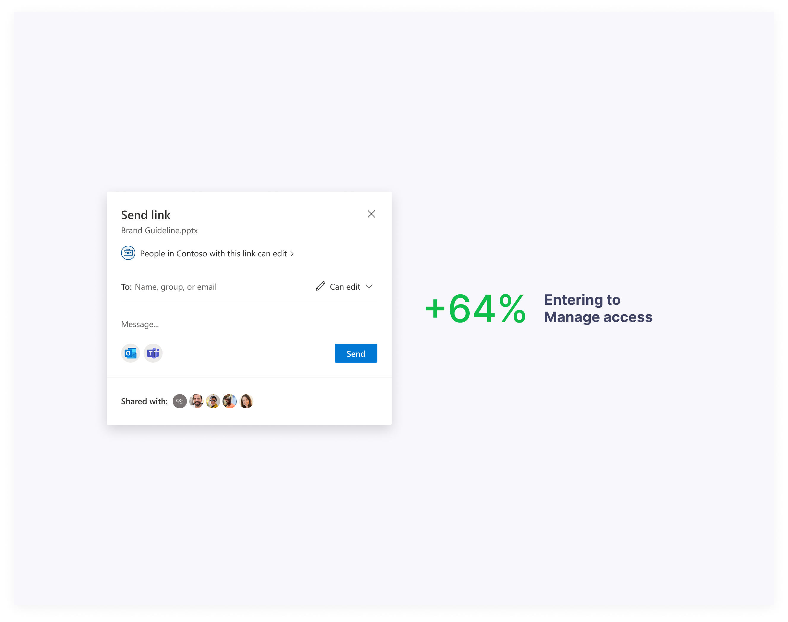

Contribution
I led the sharing experience redesign initiative across the OneDrive web and mobile entry points, in collaboration with a cross-functional team of UX designers, project managers, and engineers, to enhance its features, including Manage Access entry point.
Problems
OneDrive sharing links technology is powerful, which allows people to scope the audience based on their affiliation to a company, groups, access history, etc. That brings complexity into managing access experience and often causes frustration.
Because of that OneDrive can not afford to implement patterns familiar to people from products like Google Drive, Dropbox, Box.
Besides that, the Manage access entry point in the old experience was hidden inside the “more” button and the details pane.
Explorations
During the Sharing dialog brainstorming sessions and design sprints with our Office 365 partners, we also explored how to improve the Manage access entry point experience.
After many iterations, we finalized a couple of ideas and organized an experience wall review with engineers. We received feedback that the face-piles inside the share menu are not feasible due to technical limitations, so we iterated on this idea and transformed it into a simple Manage Access menu item. When the design was settled, we planned a user testing research study.
User testing
To test our assumptions and gather qualitative data we conducted the Shared with section user study.
Implementation
The positive feedback reassured our assumptions with qualitative data, and we planned implementation of this design into our production cycle.
As a result, the introduction of the new entry point led to a remarkable 64% surge in user engagement. Given that the sharing feature experiences approximately 40 million openings per month, the team's accomplishments are truly impressive.
The quantitative data showed that people were more intentional about who and whom they share with and felt more confident.
Next steps
Soon, we will launch our new Manage access experience with a people-centric design and observe how this change affects the sharing dialog metrics as a whole.
Thanks for reading!